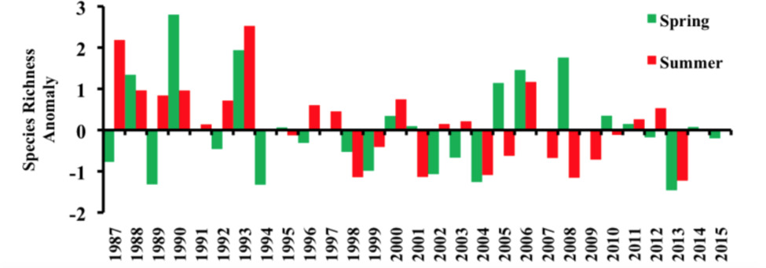

The remoteness of the Channel Islands create a haven for nesting seabirds. From migratory birds who use the islands as a stopover to year-round residents, the Santa Barbara Channel is home to a rich variety of seabirds.
Trends in seabird abundance

A figure showing trends in seabird abundance and the relative abundace of krill and forage fish from 1987 to 2011. Figure credit: Sydeman et al. 2015.
Click for Details
Trends in seabird abundance and the relative abundance of krill and forage fish, based on CalCOFI/CCE LTER program data (1987-2011). Spring and summer seabird density declined by 2 percent per year, mostly in the northern sector of the study region. Krill showed variable trends. Nearshore forage fish, dominated by northern anchovy, and offshore mesopelagic species show declines in relative abundance over this period. For more information, consult Figure App.F.13.22 in the CINMS 2016 Condition Report.Seabirds - species richness map

A series of maps showing some unexpected trends in seabird species presence (A,C) and persistence of unexpected presence (B,D) around the Southern California Bight. Figure credit: Santora and Sydeman 2015.
Click for Details
Seabird species richness spatial anomalies (A,C) and persistence of hotspots (B,D) based on visual survey for seabirds during spring and summer CalCOFI surveys from 1987 to 2012. A spatial anomaly was computed from the grand spatial mean and standard deviation for each block. Cool colors denote blocks below the mean and warm colors denote blocks above. Higher species richness and hotspot persistence (red, yellow) is observed along the coast and around Channel Islands compared to offshore (blue). Seabird species richness calculations based on 68 species/taxa. For more information, consult Figure App.F.15.7 in the CINMS 2016 Condition Report.Seabirds - species richness trends

A graph showing the change of seabird species presence in spring (green) and summer (red) from 1987 to 2015. Figure credit: Leising et al. 2015.